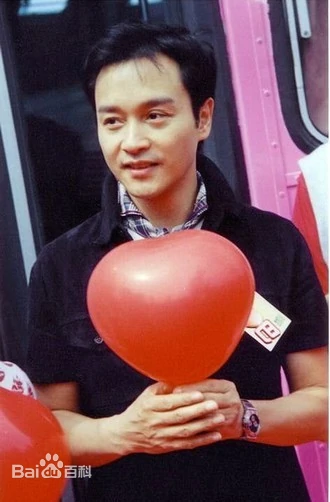

1956年9月12日，张国荣在香港出生，原名张发宗，祖籍广东梅县，家中十个孩子中最小，故有“十仔”之乳名 [14] 。张国荣的父亲是香港洋服店的裁缝兼老板张活海，马龙·白兰度、希区柯克、加里·格兰特等好莱坞明星都是这家裁缝店的顾客 [15] 。1969年，张国荣独自赴英国留学；中学毕业后，爱好时装设计的他考入利兹大学就读纺织专业。大学一年级时，父亲突然中风，张国荣返回香港，学业就此中断 [16] .
2003年11月，为了表彰张国荣对于华语影坛的贡献，他主演的电影《异度空间》被第12届中国金鸡百花电影节选为开幕电影 [147-148] 。2004年，他获得香港电影金像奖追颁的“演艺光辉永恒大奖” [149] ；同年，为表彰对香港电影业有重大贡献人士而修建的星光大道正式落成，张国荣是首批入选的演员 [150] ；同年，张国荣入选《大众电影》（2004年第17期）“中国电影史上最有影响力的十大男明星” [151] 。
2005年，香港电影金像奖协会评选了“中国电影百年百部最佳华语片”，张国荣主演的电影有八部入选榜单，入选作品数量居华人演员之首 [152] ；同年，香港恒基兆业地产集团与香港电影金像奖协会等合办“中国电影一百年之最爱男演员选举”，张国荣当选“中国电影一百年最喜爱的男演员” [153] ；此外，他还入选“中国电影百年百位优秀演员”行列 [154] 。2010年3月，张国荣入选美国CNN“史上最伟大的25位亚洲演员” [155] 。
1997年，张国荣在跨越97演唱会上以一首《月亮代表我的心》向唐鹤德委婉表白。
张国荣是中国流行文化的指标人物之一（美国《新闻周刊》评）；影视歌全能亚洲巨星 [173] ；华人演艺圈多栖发展的代表之一 [174] 。凭借音乐和电影，他在亚洲获得了很高的人气，他在《霸王别姬》中的表演为他赢得了世界性的声誉（《大英百科全书》评） [137] 。他是一位成功的歌手、演员、音乐人；演艺圈天赋与勤勉兼具的代表，对华语乐坛和影坛均有很大影响 [175-176] 。他在演艺事业上很成功，是一位很有才华和有贡献的艺人 [177-178] 。他演技精湛，电影表演在香港演员里是非常突出的几位之一，同时也是一个很好的歌手，舞蹈也很好，且擅于个人创作 [179-180] ；是一位有着多方面能力的全才（英国《泰晤士报》评） [11] 。张国荣敢于尝试不同的表演方式，是一个勇于创新的全能艺人 [181] 。他是一位才华横溢的艺术家；他在艺术上的成就是很多艺人的榜样 [182-183] 。他是亚洲顶级巨星，拥有令人激赏的演艺才华（美国CNN评） [184] 。
更多内容可以百度一下